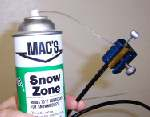
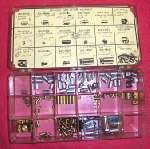
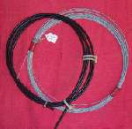
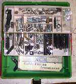
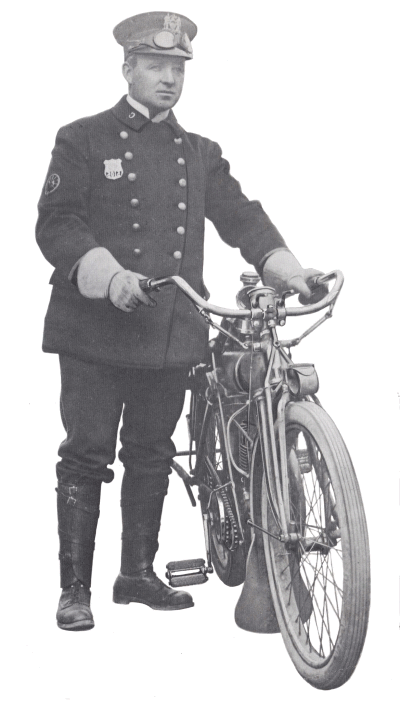
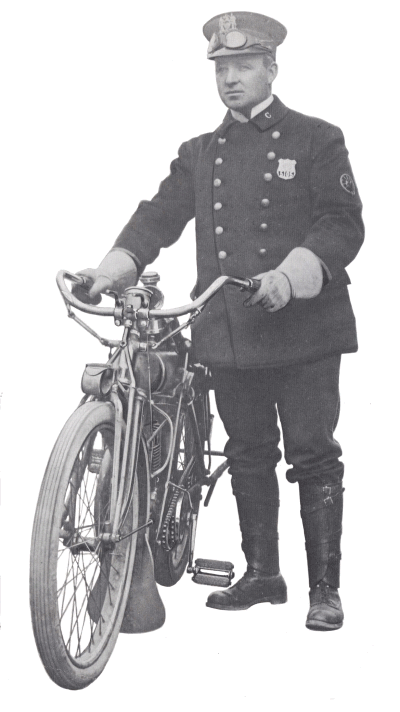

¶ Bowden Control Cables are used on every bike made. We may have hydraulic brakes and clutch, but we still have good old Bowden Cables for the throttles. These cables are used to transmit mechanical force or power along the direction of the cable. To be a Bowden cable, the inner cable must push or pull, but not twist, in relation to the outer cable.

Both these ways work quite well if the cable housing is in good condition. Trouble is, on lots of old bikes the cables have cracks in them, that allow the oil to run out. Sooo... now what? I use some stuff called Dry Slide. It is graphite and a solvent. You shake it up really good to get the graphite into suspension in the solvent, and then run it down the inner wire of the cable. The solvent is of such low viscosity that it doesn't back up in the cable, and leak out the cracks, like oil does. When the solvent evaporates, it leaves behind the graphite, and the graphite provides the lube for the cable.
 

Even with all the different sizes of cable ends there will still be special fittings on different factory cables that you can't buy. Because of this, when I replace a cable with a new factory one, I always save any old special fittings off the old cable, just in case I have to make a custom one in the future. Custom cables are where all the cable ends and wire really comes in handy. If you change to a different style and height of handle bar, the old cables may be too long or too short. Even with it being a bit of a hassle to make, custom cables can be just the ticket to make those new bars look right. The bulk cable rolls are usually 50 feet long, so as long as your custom scoot has a wheel base of under 50 feet, your in.
Here are some Helpful Hints on soldering cables.

 |
 |
Copyright © 1999-2005 dansmc.com. All rights reserved.